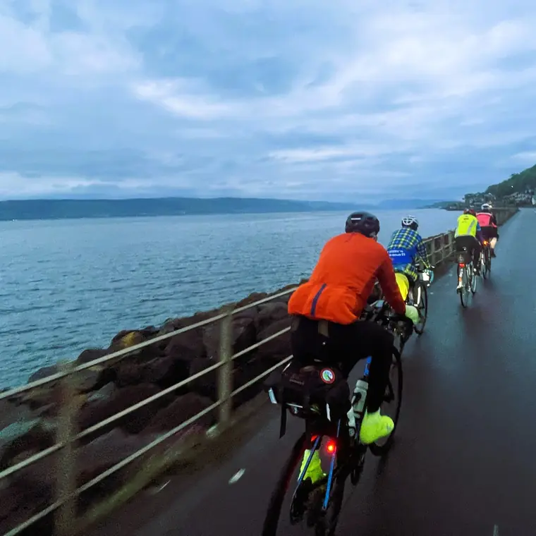

FAQ
Answers to the questions we get asked most often. All event details are provisional and this page is likely to be updated several times before the event.
Entry
Can anyone enter?
Yes, entries will be through the Audax UK website. You need to be a registered user of the site to enter. Registration is free; if you’re not already registered we advise you to do this in advance. If you’re not a paid AUK member then there may be a £3 temporary membership fee to pay when you enter the event.
Do I need to complete qualifying rides to enter?
No, there will be no pre-qualifying or qualifying rides required.
Is the ride suitable for a novice endurance rider?
Generally we’d say you should have some experience of self-supported (Audax) type rides over two or more days before entering. If you haven’t ridden multiday events before then consider entering some shorter multiday or overnight events before riding this – you will learn a lot. Even if you don’t finish them it’s about what you will learn, there’s always something.
How much will the entry fee be?
At present we’re estimating the entry fee will be £750 (June 2026). This could change subject to various factors, but hopefully not by much. We expect to be able to confirm the entry fee in late 2027.
When will entries open?
We’re currently planning on a date in late 2027; further details of when will be announced in due course.
How many places will be available?
We’re currently planning on about 150–180. The main limiting factor is capacity on the first three days; after that we expect the field to start spreading out quite a bit.
Can I cancel or transfer my entry?
Entries to Audax UK are not refundable or transferable – see Audax UK entry fees – but we recognise that this is an expensive event to enter, and whilst we need to make sure the event is financially viable we want to be fair to the riders. Therefore we will offer a conditional goodwill partial refund*, if and only if the following conditions apply: the event is full and we can fill your place from a waiting list at the full entry fee. A partial refund of £600 may be made up to 30/4/28; after this a partial refund of £375 may be made up to 30/6/28 if the previous conditions apply. Note Audax UK terms and conditions still apply. There will be no partial refunds after 30/6/28 in any circumstances.
* Note the entry fee is a provisional estimate at this point, as are the goodwill partial refund dates and amounts – these will be confirmed before entries open.
You should only enter the event if you intend to ride it and expect to be fit enough and prepared to participate.
If I can’t ride due to injury, illness or other reasons, can I get a refund?
See the FAQ above – Audax UK entry fees are not refundable or transferable. You may wish to consider arranging your own travel or other insurance to cover your plans. You will have to do this independently of the event.
I’m travelling from outside the UK, will I need a visa and can you help me get one?
See the Gov.uk website. Sorry, we can’t help with visa applications if needed.
Registration and the start
Where does the event start?
At the Crichton Trust site in Dumfries.
How do I get to Dumfries?
Dumfries is easily accessible by road from the A75. If you are travelling by public transport there is a regular train service from Carlisle or Glasgow – see train operator websites for carriage of bikes.
Is there camping or motorhome parking available on site before or after the event?
No, but there are various commercial options not too far away from the start.
I’ve entered – do I need to register on the day?
Yes, you will need to register on the day, which will be at the Crichton Trust site in Dumfries. You may be asked for photo ID as proof of identity.
What will happen at registration?
You’ll need to register and collect your brevet card and other event items. This will include a tracker, power bank, drop bag, labels, ferry ticket and anything else we think you may need – see final information nearer the time. You’ll also be able to collect any merchandise you’ve purchased. We may ask to see some photo ID.
There will be a registration form to sign to agree to various terms and conditions; we’ll send a draft of this out before the event for information. It will also include that you will return the hired tracker and power bank, or agree to reimburse us for the cost if you fail to do so. You will have already agreed to many of the Ts and Cs when you registered on the Audax UK website and entered.
Is there car parking at the start/registration?
We are hoping to arrange free car parking very near to the registration and start area.
Are there any hotels near the start?
There is a Holiday Inn adjacent to the start, and there are lots of independent hotels and B&Bs in Dumfries. There are also a Premier Inn and a Travelodge on the eastern edge of Dumfries.
When will registration be open?
From 11am to 8pm on Monday 31 July. It will be adjacent to the start area.
What facilities will there be at registration?
There will be a café adjacent to registration where you can buy food and drinks, and there is lots of inside and outside space. There are toilets and also showers in the building.
Will there be food available before we start?
There is a café adjacent to registration where you can buy food and drinks. The café closes at 4pm. We will provide something to eat before you start, probably from about 4.30pm–8pm, times to be confirmed; the pre-start meal will be included in your entry fee. Any food and drinks you buy from the café during the day you will have to pay for.
Is there a left luggage facility?
We will have somewhere to leave left luggage, which will be transported to the finish for the end of the event. This will be at your own risk and neither the event nor any of the premises take any responsibility for your property. Do not leave any valuable property in your left luggage, and please make sure it is clearly labelled. See final information.
Can I choose my start time?
Yes and no – this will be allocated. We’ll probably start riders in 15 minute blocks and we’ll aim to give you a few choices of start time, but we can’t guarantee you’ll get what you ask for. More information nearer the time.
Are there any benefits to starting earlier or later?
Generally we’d suggest slower riders start earlier and faster riders start a bit later. The first ferries at Gourock aren’t expected to be until 6.30am the following morning. If you want to try and get a bit of sleep on the first night then faster riders could consider starting earlier; if you want a bit of luxury there are hotels in Ayr (133km) or Greenock, a short distance before the first ferry (about 210km), with 24hr check in. The controls on the first night are not intended to provide sleeping facilities, and there will be no drop bags to controls on the first night.
The route
When will the final route be published?
The draft route is available now – see 2028 (DRAFT) Grand Tour of Scotland 2000km on Ride with GPS. The final route will be published in sections nearer the event. It is unlikely there will be significant changes to the route; for most of the route there is only one option.
Is the route mandatory?
Yes, but there may be a section where we give you an option.
Is there a maximum and minimum speed for the event?
Yes, the overall maximum speed is set at 25kph and the minimum at 10kph, although we expect most riders to get ahead of the maximum on the first night, and the control opening and closing times particularly will encourage riders to make progress on the first two to three days.
How long do I have to complete the route?
The minimum speed will be 10kph, so you will have roughly 203 hours.
Is the route all on tarmac?
Most of it. There is a 15km section which avoids the A82 north of Fort William, which is a very busy section of road during the day. This 36km section is a mixture of very good smooth tarmac on quiet roads, some reasonable tarmac and some sections along forest roads. The off-road section is rideable on a road bike with reasonable care.
For anyone intending to do this section at night there will be an alternative via the A82, which is a similar distance. The off-road route is much more pleasant than the busy A82 during the day, but at night the main A82 will be a better option for most people. More information in final details.
There are cycle path sections on other parts of the route, and these are generally good cycle paths.
I’ve booked some commercial accommodation near the route, can I leave the route to go to it?
Yes, but you should return to rejoin the route at the place where you left it.
What other facilities are there on the route?
In towns and villages you will usually find a shop, and sometimes cafes or other places that do food. Shops and cafes often have very limited opening hours and may be busy. Shops in smaller places may not have a lot of choice, particularly if 100+ hungry cyclists have descended upon them.
Are there any other accommodation options along the route?
Yes, you’re free to stay at any other accommodation – you may prefer a night or two somewhere with a comfortable bed and a bath or shower. Obviously you’ll have to book these yourself, and if you leave the route you should return to it at the same place.
There are smaller B&Bs along the route, but accommodation may be limited and expensive in peak season and reception times may be limited – check in advance! There are also some hostels on or near the route, some operated by Hostelling Scotland and some independent ones. You will also find some motel type accommodation in some of the larger towns such as Ayr, Oban, Fort William, Inverness, Elgin and Perth, and other places near the central belt. If you do book, we’d always advise you book the fully cancellable option – it often only costs a little bit more and you never know what will happen!
Can my partner or friend meet me to provide support along the route?
Strictly not. Sorry, but the route is mainly on small quiet roads which are not suitable for extra traffic. There will be strict and severe penalties for anyone receiving external support from anyone who has driven along the route to provide this.
What happens if I fall behind the control opening times?
You can keep going and try to make the time up, but there may be no event support or facilities. Alternatively there are quite a few sections of the route where you can miss part of the route out. If you do miss sections then you can easily get back to a schedule where the controls will be open. You will of course be a DNF, but you’re welcome to keep using the controls and ride back through the event controls if they are open.
What happens if I can’t complete the full route?
As above, unfortunately you will be a DNF, but you can continue along the route or sections of it and ride back. Alternatively you can make your own way back by public transport or other means, but we won’t be recovering you or taking you back to the finish.
Can I get an AUK points credit for the distance I’ve ridden if I don’t complete the full route?
No, you have to complete the full route.
What happens if the weather is bad?
It’s Scotland in summer – there will be weather, and we’re confident it won’t be a tailwind and sunshine all the way round. You could easily experience all four seasons during the event. Hopefully you’ve packed enough kit! If the weather is really severe then we may consider suspending the event and holding riders at controls until the weather improves; if we do so then it’s likely there will be an extra time allowance.
What is the longest, most remote section?
Between Strath Halladale (1257km) and Rosehall (1373km), through the ‘Flow Country’ in Sutherland. It is extremely remote and can be very exposed in bad weather; it can also be very beautiful with very little traffic. The only real place with any facilities is Lairg, almost 100km from Strath Halladale.
Controls
What is included at the controls?
A few of the controls will be food only or light snacks – see the controls list. At most of the event controls there will be food and somewhere to rest, depending on demand and rider flow. It’s possible some of the controls could be very busy at times, but we’ll try to manage that as best we can and let you know where we think will be busy.
How many controls will there be?
We’re currently planning about 25 event controls where there will be food and, at most of them after the first night, somewhere to rest. Subject to entry numbers we may increase that.
Is this the final list of controls (summer 2026)?
No. Subject to the number of entries and the position in spring 2028 we will review this, and we may add some additional facilities subject to the number of riders and other factors. It’s very unlikely there will be fewer controls.
When will the controls be open?
To keep the cost reasonable and the logistics manageable the controls will have limited opening times. These should work for most riders unless you intend to ride very quickly round with very little sleep; if so, this is not the event for you – there are plenty of other events more suited to this. See the provisional control opening schedule.
Once a control is open it will stay open, day and night, until either the closing time or when the last rider gets there, whichever is sooner. Controls will not be kept open for riders who have abandoned or taken a short cut after falling behind.
What happens if I’m riding quickly and get ahead of the control opening times?
Well, that’s up to you – the event isn’t designed for people treating it as a race. You can either crack on, and then you’re on your own, or slow down, enjoy the views, perhaps a café stop or a visit to a local tourist attraction, or just relax and take it easy.
What happens if I get behind the control opening times?
If the controls are closed when you get there you will have to obtain your own proof of passage; this will be explained in the final event information. Obviously there will be no food available or anywhere for you to rest, and if your drop bag was there we will have taken it somewhere else. If you think you can get yourself back on a schedule to finish in time then you can continue; if not, you may have to reassess your options and consider cutting out a section of the route.
Will there be airbeds at the controls?
No, but see the section on drop bags. We’d strongly advise you pack a small light inflatable sleeping mat, possibly a small light sleeping bag, ear plugs and an eye mask or buff. If you don’t then you’ll probably get fed up quite quickly with sleeping on hard floors.
Are there showers at the controls?
Generally no, but some of them do have showers – they are likely to be in demand. See the controls information.
Will you provide towels and toiletries where there are showers?
No, again this would be very expensive and logistically difficult. We suggest you buy and pack a small, light travel towel and travel shower gel or soap.
Can I buy snacks, supplies or bike parts at controls?
No, we won’t be selling food or snacks. There will be some shops along the route, and it also passes near some bigger towns with supermarkets at times if you want a major restock.
Will there be mechanics at the controls?
No, you will need to be self sufficient. There may be volunteers who can help but you can’t rely upon that. We’ll try and help if we can, but if not you may have to try and find a local bike shop and there aren’t many of those. We strongly advise you to know how to carry out basic repairs to your bike.
What will the food be like at the controls?
There should be something you can eat, but the remoteness of most of the route and the complex nature of the event mean that the logistics of getting enough food to the controls may be very difficult at times, particularly when controls are really busy. We’ll try to provide choices of decent quality food but there are times when this may be challenging; if so, please bear with us.
We’ll be trying our best, but trying to feed all the riders spread out over 25+ controls in very remote parts of Scotland will be difficult. You won’t starve, but we’re not promising multiple choices and several courses at every control. We’ll do our best.
I have a food allergy, intolerance or dietary choice – can you accommodate my requirements?
We will do our best to provide gluten free, dairy free and vegan choices at controls, but we cannot guarantee what choices will be available.
When will food be available at controls?
We aim to have food available all the time the control is open. What you get may vary and may be subject to what we can get to the control and what the volunteers can provide.
Can I charge my phone or bike computer at controls?
No, definitely not. The small village halls will not cope with large numbers of people trying to charge devices. We intend to provide you with a power bank battery at the start (included in your entry fee) in a similar system to that used very successfully on LEL 2025. The intention is you will be able to swap this at controls for a charged power bank. There will be a time penalty for anyone charging devices at controls.
Will there be Wi-Fi at the controls?
Most of the controls have Wi-Fi, but if you all try and use it at the same time it probably won’t cope.
Will the controls be busy?
The first three days are likely to be busy, then riders will naturally spread out. One of the reasons for trackers is so we can try and manage rider flow and demand in controls. Subject to numbers we may try and add additional facilities in the first two to three days.
If the control is busy can I sleep outside?
A lot of the controls have plenty of space outside. If you prefer, you may want to pack a bivvy bag in your drop bag or carry it and sleep outside. You’ll avoid the snoring and other night-time noises, but you may have the midges for company – pack some spray or a net. You may also need to be aware of ticks and other beasties in the grass.
The control I’ve sent my drop bag to doesn’t have showers, can you provide things for me?
No. We suggest you carry a travel towel – these are light and don’t take up much space – and some travel shower gel or soap.
Drop bags
How does the drop bag system work?
At registration we will give you a drop bag. You can use this or your own – many people will choose to use a small lightweight ‘daysac’ type rucksack. The intention is we will transport your bag to one event control each day. Bags will be collected in the morning from a control and taken to a control further along the route for that evening (usually within 150–350km), and there may be limited choices.
For example, if you have spent the night at Dornie (800km) then you would be able to have your bag taken to Poolewe (942km), Braemore (1008km), Lochinver (1071km) or Durness (1156km). We won’t be taking it to a control that isn’t open – for example Strath Halladale (1252km) may not be open. We’ll publish a provisional list of control opening and closing times in due course.
Can I use my own bag?
Yes. You can use the event drop bag, but they will all look the same, or you may prefer to use your own bag – this may be lighter and have more capacity. There is a good range of ‘daysac’ type bags available at most outdoor shops at quite a reasonable price, and they may be a better option for you.
Is there a size and weight limit for drop bags?
Yes, provisionally a 5kg total weight limit – they will be weighed when you hand them in – with a maximum size of 30cm in diameter and 40cm long or tall. If they are bigger than this we will NOT take them.
What can I take in my drop bag?
That’s up to you. See the ‘what you can’t take’ question, but we’d advise essentials are a sleeping mat, ear plugs, eye mask, possibly an inflatable pillow, and possibly a lightweight sleeping bag or liner. Spare shorts, socks and possibly other clothing including base layers, spare inner tubes, a spare tyre and other spare parts if needed. The weight limit will be tight for most people – you will have to pack efficiently and lightly. We suspect there will be some discussion about this nearer the time.
What can’t I take in my drop bag?
No liquids, grease, glass, or anything sharp or breakable. We suggest you carry a small bottle of oil with you on the bike. If you need spare batteries, either carry them with you or make sure they are in a hard container. Note you will get a power bank to use during the event at registration, which you can use to charge devices.
Why do we only have one drop bag and not multiple ones?
The logistics and cost of multiple drop bags make it very impractical. It would also mean you would need multiple numbers of each item for a drop bag. This way it means you should get access to your bag once a day, if you plan it sensibly.
What happens if I don’t reach the control I’ve sent my drop bag to that day?
Sorry, but it’s very unlikely we’ll be in a position to start moving bags to different locations on an evening or during the night. Be realistic about your daily target.
I can’t fit everything I want in my drop bag, are there any other options?
The Post Office may offer a ‘Poste Restante’ system – have a look on the internet. Not all branches will offer this and some, particularly in rural areas, may have very limited opening hours; branches in bigger towns or cities may have more options.
InPost also offer a service where you can send a parcel to a locker to be collected by someone – this could obviously be yourself – see their website.
If you are booking external accommodation, for example at a B&B, you may be able to negotiate sending a parcel in advance. You can always send stuff home by parcel from a Post Office or a parcel company.
You will have to arrange any of these yourself and obviously at your own risk.
The finish
How far is the finish from the start and parking?
About 7km – an ‘easy’, relatively flat and gentle ride back to the car parking or start, and only a little bit further to the centre of Dumfries.
When will the finish be open?
Provisionally from the evening of Saturday 5 August until the afternoon of Wednesday 9 August.
Will there be food at the finish?
Yes. As with the other controls it may be limited, depending on time of day and demand.
Can I sleep at the finish?
Yes, but it’s just one hall – there’s plenty of outside space though.
When will my drop bag arrive at the finish?
Hopefully before you get there, or if not shortly after. Note that if you DNF or shortcut the route this may delay your drop bag arriving back.
What happens if I don’t collect my drop bag?
If you don’t collect it from the finish then you may be able to arrange for us to post it to you at your own expense. Any bags uncollected, or where other arrangements have not been agreed to collect or post them, within two weeks will be disposed of as we see fit.
What happens if I don’t get to the finish before it closes?
You will have to make alternative arrangements to return your tracker and power bank before the end of the event, or you will be charged for them.
Other questions
What bike would you recommend?
Something you’re used to riding and that is very comfortable for multiple long days.
What tyres should I use?
Most people will use road tyres; the off-road forest road section is rideable on a road bike with smooth tyres with care. We’d generally advise using larger tyres, at least 28mm but ideally 32–35mm – they’ll give you a bit more comfort and hopefully be a bit more robust over 2000km. The other ‘off-road’ sections are generally all good cycle paths. We’d strongly advise you carry a spare tyre, or at least have one in your drop bag.
I’m interested in volunteering, how do I volunteer?
Send an email to volunteers@grandtourofscotland.com and we’ll ask for some more information from you. We’ll be trying to use local volunteers wherever possible but we will need some additional help.
Will there be event jerseys and other merchandise available to buy?
We intend to have event jerseys available to purchase, and other merchandise such as T-shirts and mugs. These will be available to order on the website in due course and can be collected at registration.
If I purchase a jersey or other merchandise and I don’t ride, or can’t collect it at the start, can you post it to me?
We may be able to, but this will be at additional cost to yourself. If this happens, contact us nearer the time.
What about the wildlife?
Expect to see a great variety of wildlife. There’ll be sheep and cows, often on the roads, deer and various birds, often some big birds of prey such as sea eagles, and of course it’s likely there will be the famous Scottish midges. If you’re rolling around in the grass you may need to watch out for ticks.
How bad are the midges?
It all depends on the weather. If it’s damp and humid with no wind and you’re in the wrong bit then they could be horrible. They don’t like direct sun, cold or windy conditions; generally if you’re moving they are fine, but you probably won’t want to sit outside if they are bad. A little bit of a breeze or a warm sunny day and they’re no problem – don’t stop in sheltered shady spots.
A midge head net may be a very useful addition to your kit in case you have to stop for a mechanical, something like this Smidge lightweight headnet, available from various retailers or directly. They don’t weigh a lot.
Is there a broom wagon or recovery service?
No, it’s an Audax – you need to be self sufficient. If you’re struggling we’ll try and help if possible, but we won’t be coming to get you. There are options where you can cut the route short or use public transport. You may also want to consider taking out cycle recovery insurance prior to the event; an internet search for ‘cycle recovery insurance’ will give you options, or ask other riders before the event what they use.
What if I have a puncture or other simple mechanical problem at the roadside?
We would strongly advise that you are competent in carrying out basic repairs to your bike. If you aren’t sure what to do, consider a bike maintenance course before the event – it’s better to practise in good conditions rather than at 3am on a dark wet night in the middle of nowhere.
Do I have to have a tracker?
Yes. These are mandatory for event safety reasons and also event management. There may be a time penalty for anyone deliberately switching off their tracker. See live tracking.
How long will the tracker battery last?
It should last the duration of the event, but you will be able to charge it from your power bank.
Are the trackers and power banks included in the entry fee, and what happens at the end of the event?
Yes, they are included in the entry fee. Trackers and power banks must be returned; if you abandon then you can leave them at any open control. If you fail to return them or lose them then you will be invoiced for the cost of them – this will be in the event Ts and Cs you agree to.
What happens if I abandon during the event?
Please let us know at the earliest reasonable opportunity. You will need to arrange to return your tracker and power bank to the finish, or you can return them to any open control. You will need to arrange to collect your drop bag either from the finish or from an open control.
Will I need insurance for the event?
The Audax UK insurance policy only provides riders with limited third party liability cover – see Audax UK insurance – and note there is an excess for which the rider is liable. It covers legal liability only in the event of negligence; it does not cover deliberate acts. Audax UK cover begins when the rider starts the event and ceases from the point where the event closes, or from when the rider signs off on completing the ride or otherwise abandons or cuts short the event. Audax UK insurance does not cover riding to or from the event, cancellation, theft or any other risks.
We would strongly advise all riders to arrange their own comprehensive insurance to cover all aspects of the event, including travelling to and from the event and also cancellation insurance. You may also consider arranging cycle recovery insurance; this is often not expensive compared to a very expensive taxi ride, if you can actually get a taxi!
Will I need lights?
You will definitely need to ride in the dark on the first night and you’ll probably need to use them at other times, either due to darkness or bad weather. That being said, it’s Scotland in early August and it doesn’t get dark for long.
What else should I carry with me or on the bike?
That could be a very long list and everyone has different views – you can ask for suggestions on the Facebook group. We’d suggest a minimum of some or all of the below. This is not an exhaustive or limited list, it’s a starting point!
- Lights – front and back
- Capacity to carry water to the next place to refill
- Emergency food
- Toolkit including spare tubes (or tubeless repair kit)
- Spare clothing including waterproof jacket
- Midge net in case you have to stop in some places
Will there be a route sheet?
Yes, but we expect most people will be using a bike computer to navigate, and for most of the route there isn’t really any choice.
Can’t find your answer?
Email event@grandtourofscotland.com and we’ll add common questions to this page.
